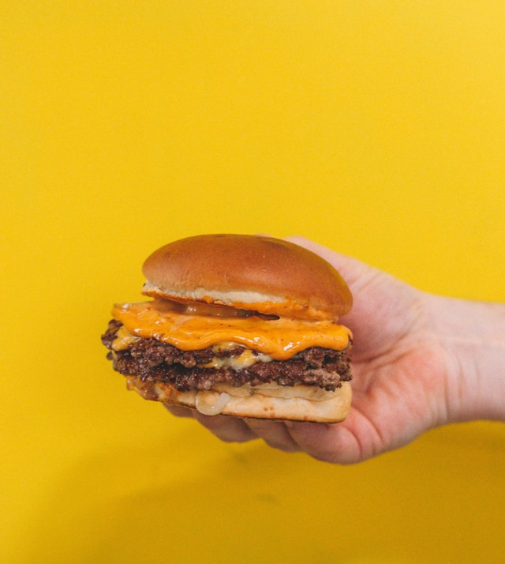

Cheeseburger

Description
A classic cheeseburger with a juicy beef patty, melted cheese, fresh lettuce, tomato, and pickles, served on a toasted bun. Perfect for a quick lunch or dinner.
Ingredients
- 1 pound ground beef (80/20 blend recommended)
- Salt and pepper to taste
- 4 slices of cheddar cheese
- 4 hamburger buns
- 1 cup lettuce, shredded
- 1 tomato, sliced
- 1/2 cup pickles, sliced
- Ketchup and mustard (optional)
Steps
- Preheat your grill or stovetop skillet over medium-high heat.
- Divide the ground beef into 4 equal portions and shape them into patties. Make a slight indentation in the center of each patty to prevent it from puffing up while cooking.
- Season both sides of the patties with salt and pepper.
- Place the patties on the grill or skillet. Cook for about 3-4 minutes on one side, then flip them over.
- After flipping, place a slice of cheddar cheese on each patty and cook for an additional 3-4 minutes, or until the cheese is melted and the burger is cooked to your desired doneness.
- While the burgers are cooking, toast the hamburger buns on the grill or in a toaster until golden brown.
- Assemble the burgers by placing a patty on each bun, followed by lettuce, tomato slices, pickles, and any additional condiments you like (ketchup, mustard, etc.).
- Serve immediately with your favorite side dishes like fries or a salad.
Back to home